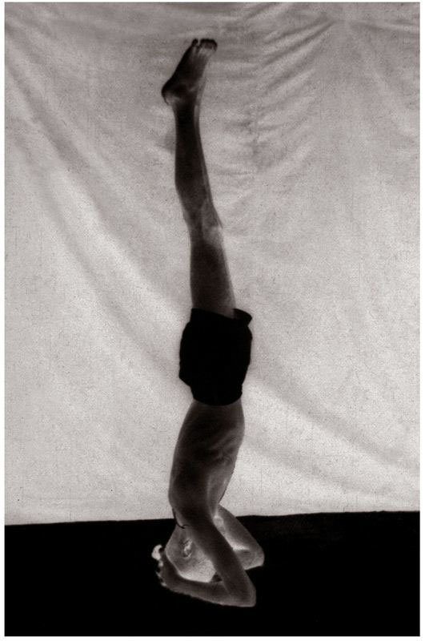

Uttana Padasana has thirteen vinyasas, of which the 8th is its state.
METHOD
Perform all the vinyasas from the beginning of Sarvangasana to the 7th vinyasa; this is also the 7th vinyasa of Uttana Padasana. Then, as in Matsyasana above, lift the head, place the crown of the head on the floor, arch the back, extend the legs, as in Navasana, hold straightened arms out parallel with the legs, bring the palms together, tighten the entire body, and do rechaka and puraka as much as possible; this is the 8th vinyasa. Then do the 9th vinyasa of Matsyasana, and roll into the 4th vinyasa of the first Surya Namaskara; this is the 9th vinyasa. The next vinyasas follow those of earlier asanas.
BENEFITS OF ASANAS 37 & 38
Matsyasana and Uttana Padasana counterpose the five asanas that precede them and remove the shoulder and waist pain that result from their practice. They also purify the esophagus and anus, as well as the liver and spleen, and furnish the waist and neck with increasing strength. Matsyasana and Uttana Padasana should be practiced after Sarvangasana and the like are completed.
I HAVE DESCRIBED EACH OF THE SEVEN ASANAS ABOVE AND THEIR VINYASA methods separately to help aspirants better understand them. However, it is not necessary to do all the vinyasas specified for each asana, as this would take a very long time. Instead, one should practice consolidating them, after having clearly grasped the importance of the steadiness of rechaka and puraka. Thus, after Sarvangasana, one should do Halasana, then come into the state of Karna Pidasana, followed by Urdhva Padmasana, then do Pindasana and, finishing puraka, move into the state of Matsyasana while doing rechaka, and then, pass into the state of Uttana Padasana, and finally, doing puraka and rechaka, do Chakrasana. Aspirants should keep this method in mind.
